산업보건지도사 (2015-04-18 기출문제)
1과목: 산업안전보건법령
1. 산업안전보건법령상 안전보건관리규정의 작성 등에 관한 설명으로 옳지 않은 것은?
- 안전보건관리규정을 작성하여야 할 사업의 사업주는 안전보건관리규정을 작성하여야 할 사유가 발생한 날부터 30일 이내에 안전보건관리규정을 작성하여야 한다.
- 안전보건관리규정에는 작업장 안전관리에 관한 사항, 안전ㆍ보건교육에 관한 사항이 포함되어야 한다.
- 사업주가 안전보건관리규정을 작성하는 경우에는 소방ㆍ가스ㆍ전기ㆍ교통 분야 등의 다른 법령에서 정하는 안전관리에 관한 규정과 통합하여 작성할 수 있다.
- 안전보건관리규정을 변경할 사유가 발생한 경우에는 그 사유를 안 날부터 15일 이내에 작성하여야 한다.
- 안전보건관리규정이 해당 사업장에 적용되는 단체협약 및 취업규칙에 반하는 경우, 안전보건관리규정 중 단체협약 또는 취업규칙에 반하는 부분에 관하여는 그 단체협약 또는 취업규칙으로 정한 기준에 따른다.
(정답률: 알수없음)

2. 산업안전보건법령상 사업 내 안전ㆍ보건교육의 교육과정, 교육대상 및 교육시간 을 나타낸 표이다. 교육과정 및 교육대상별 교육시간이 옳지 않은 것은?
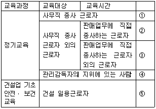
- 매분기 2시간 이상
- 매분기 3시간 이상
- 매분기 6시간 이상
- 연간 16시간 이상
- 4시간
(정답률: 알수없음)
3. 산업안전보건법령상 근로자에 대한 안전ㆍ보건에 관한 교육을 사업주가 자체적으로 실시하는 경우에 교육을 실시할 수 있는 사람에 해당하지 않는 사람은?
- 산업안전지도사 또는 산업보건지도사
- 한국산업안전보건공단에서 실시하는 해당 분야의 강사요원 교육과정을 이수한 사람
- 해당 사업장의 안전보건관리책임자, 관리감독자 및 산업보건의
- 산업안전ㆍ보건에 관하여 학식과 경험이 있는 사람으로서 고용노동부장관이 정하는 기준에 해당하는 사람
- 산업안전ㆍ보건에 관한 전문적인 지식과 경험이 있다고 사업주가 인정하는 전문강사요원
(정답률: 알수없음)
4. 산업안전보건법령상 위험기계인 불도저를 타인에게 대여하는 자가 해당 불도저를 대여받은 자에게 유해ㆍ위험 방지조치로서 서면에 적어 발급해야 할 사항이 아닌 것은?
- 해당 불도저의 능력
- 해당 불도저의 특성 및 사용 시의 주의사항
- 해당 불도저의 수리ㆍ보수 및 점검 내역
- 해당 불도저의 조작 가능자격
- 해당 불도저의 주요 부품의 제조일
(정답률: 알수없음)
5. 산업안전보건법령상 유해하거나 위험한 작업의 도급에 대한 인가를 받기 위해 제출하는 도급인가 신청서에 첨부하는 도급대상 작업의 공정도에 포함되어야 할 것을 모두 고른 것은?
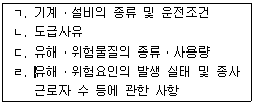
- ㄱ, ㄴ
- ㄱ, ㄷ
- ㄴ, ㄹ
- ㄱ, ㄷ, ㄹ
- ㄴ, ㄷ, ㄹ
(정답률: 알수없음)
6. 산업안전보건법령상 자율안전확인대상 기계ㆍ기구등에 해당하는 것을 모두 고른 것은?
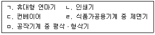
- ㄱ, ㄴ
- ㄴ, ㄷ
- ㄱ, ㄷ, ㅁ
- ㄷ, ㄹ, ㅁ
- ㄴ, ㄷ, ㄹ, ㅁ
(정답률: 알수없음)
7. 산업안전보건법령상 제조ㆍ수입ㆍ양도ㆍ제공 또는 사용이 금지되는 유해물질에 해당하는 것은?
- 함유된 용량의 비율이 3퍼센트인 백연을 함유한 페인트
- 오로토-톨리딘과 그 염
- 함유된 용량의 비율이 4퍼센트인 벤젠을 함유하는 고무풀
- 알파-나프틸아민과 그 염
- 벤조트리클로리드
(정답률: 100%)
8. 산업안전보건법령상 안전검사에 관한 설명으로 옳은 것은?
- 건설현장에서 사용하는 크레인은 최초로 설치한 날부터 1년마다 안전검사를 실시한다.
- 건설현장 외에서 사용하는 리프트는 사업장에 설치가 끝난 날부터 3년 이내에 최초 안전검사를 실시하되, 그 이후부터 2년마다 안전검사를 실시한다.
- 건설현장에서 사용하는 곤돌라는 사업장에 설치가 끝난 날부터 4년 이내에 최초 안전 검사를 실시한다.
- 건설현장 외에서 사용하는 크레인은 최초 안전검사를 실시한 이후부터 3년마다 안전 검사를 실시한다.
- 다른 법령에 따라 안전성에 관한 검사나 인증을 받은 경우에는 산업안전보건법 령상의 안전검사가 면제된다.
(정답률: 알수없음)
9. 산업안전보건법령상 도급인인 사업주가 도급사업 시의 안전ㆍ보건조치로서 사업별 작업장에 대해 순회점검하여야 하는 횟수가 옳은 것은?
- 제조업 - 3일에 1회 이상
- 서적, 잡지 및 기타 인쇄물 출판업 - 1주일에 1회 이상
- 금속 및 비금속 원료 재생업 - 2일에 1회 이상
- 건설업 - 1주일에 1회 이상
- 토사석 광업 - 1개월에 1회 이상
(정답률: 알수없음)
10. 산업안전보건법령상 직무교육에 관한 설명으로 옳은 것은? (단, 전직하여 신규로 선임된 경우는 고려하지 않음)
- 직무교육기관의 장은 직무교육을 실시하기 15일 전까지 교육 일시 및 장소 등을 직무 교육 대상자에게 알려야 한다.
- 보건관리자로 의사가 선임된 경우 선임된 후 3개월 이내에 직무를 수행하는 데 필요한 신규교육을 받아야 한다.
- 재해예방 전문지도기관에서 지도업무를 수행하는 사람은 해당 직위에 선임된 후 6개월 이내에 직무를 수행하는 데 필요한 신규교육을 받아야 한다.
- 안전보건관리책임자는 신규교육을 이수한 후 매 3년이 되는 날을 기준으로 전후 3개월 사이에 안전ㆍ보건에 관한 보수교육을 받아야 한다.
- 안전관리자로 선임된 자는 해당 직위에 선임된 후 6개월 이내에 직무를 수행하는 데 필요한 신규교육을 받아야 한다.
(정답률: 알수없음)
11. 산업안전보건법령상 유해하거나 위험한 기계ㆍ기구등의 방호조치 등과 관련하여 근로자의 준수사항으로 옳은 것은?
- 방호조치를 해체한 후에 그 사유가 소멸된 경우, 해체상태 그대로 사용한다.
- 방호조치가 필요 없다고 판단한 경우, 즉시 방호조치를 직접 해체하고 사용한다.
- 방호조치가 된 기계ㆍ기구에 이상이 있는 경우, 즉시 방호조치를 직접 해체해야 한다.
- 방호조치를 해체하려는 경우, 한국산업안전보건공단에 신고한 후 해체하여야 한다.
- 방호조치의 기능이 상실된 것을 발견한 경우, 지체 없이 사업주에게 신고한다.
(정답률: 알수없음)
12. 산업안전보건법령상 안전인증에 관한 설명으로 옳지 않은 것은?
- 안전인증대상인 프레스의 주요 구조 부분을 변경하는 경우 안전인증을 받아야 한다.
- 안전인증을 신청하는 경우에는 고용노동부장관이 정하여 고시하는 바에 따라 안전 인증 심사에 필요한 시료(試料)를 제출하여야 한다.
- 안전인증을 받은 자는 안전인증제품에 관한 자료를 안전인증을 받은 제품별로 기록 ㆍ보존하여야 한다.
- 기계ㆍ기구 및 방호장치ㆍ보호구가 유해ㆍ위험한 기계ㆍ기구ㆍ설비등 인지를 확인 하는 심사는 서면심사로서 15일내에 심사를 완료해야 한다.
- 지방고용노동관서의 장은 안전인증대상 기계ㆍ기구등을 제조ㆍ수입 또는 판매하는 자에게 자료의 제출을 요구할 때에는 10일 이상의 기간을 정하여 문서로 요구하되, 부득이한 사유가 있을 때에는 신청을 받아 30일의 범위에서 그 기간을 연장할 수 있다.
(정답률: 알수없음)
13. 산업안전보건법령상 건설업체 산업재해발생률 및 산업재해 발생 보고의무 위반 건수 산정 기준과 방법에 관한 설명으로 옳지 않은 것은?
- 산업재해발생률 및 산업재해 발생 보고의무가 있는 건설업체의 산업재해발생률은 환산 재해자 수를 상시 근로자 수로 나눈 환산재해율로 산출하되, 소수점 셋째 자리 에서 반올림한다.
- 사망재해자의 재해 발생 시기가 2014.11.20. 이고 사망 시기가 2015.4.8. 인 경우 사망 재해자에 대해서는 부상재해자의 5배로 하여 가중치를 부여할 수 있다.
- 둘 이상의 업체가 「국가를 당사자로 하는 계약에 관한 법률」에 따라 공동계약을 체결하여 공사를 공동이행 방식으로 시행하는 경우 해당 현장에서 발생하는 재해자 수는 공동수급업체의 출자 비율에 따라 분배한다.
- 산업재해자 중 근로자간 폭행에 의한 경우로서 사업주의 법 위반으로 인한 것이 아니라고 인정되는 재해에 의한 재해자는 재해자 수 산정에서 제외한다.
- 산업재해의 사망재해자 중 고혈압 등 개인지병에 의한 경우로 해당 사고발생의 직접적인 원인이 사업주의 법 위반으로 인한 것이 아니라고 인정되는 재해자에 대해서는 가중치를 부여하지 않는다.
(정답률: 알수없음)
14. 산업안전보건법령상 중대재해에 해당하는 것은?
- 사망자가 1명 발생한 재해
- 2억 원의 경제적 손실이 발생한 재해
- 장애등급을 판정받은 부상자가 발생한 재해
- 부상자 또는 직업성질병자가 동시에 5명 발생한 재해
- 1개월의 요양이 필요한 부상자가 동시에 3명 발생한 재해
(정답률: 알수없음)
15. 산업안전보건법령상 고용노동부장관이 산업재해를 예방하기 위해 필요하다고 인정하여 사업장의 산업재해 발생건수, 재해율 또는 그 순위 등을 공표할 수 있는 대상 사업장을 모두 고른 것은?
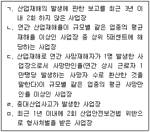
- ㄱ, ㄷ
- ㄴ, ㅁ
- ㄷ, ㄹ
- ㄱ, ㄴ, ㄹ
- ㄴ, ㄷ, ㅁ
(정답률: 알수없음)
16. 산업안전보건법령상 지방고용노동관서의 장이 사업주에게 안전관리자나 보건관리자 (이하 '관리자'라 함)를 정수 이상으로 증원하게 하거나 교체하여 임명할 것을 명할 수 있는 경우에 해당되지 않는 것은?
- 중대재해가 연간 5건 발생한 경우
- 상시근로자가 100명인 사업장에서 직업성질병자 발생 당시 사용한 니트로벤젠 (Nitrobenzene)으로 인한 직업성질병자가 연간 5명 발생한 경우
- 상시근로자가 100명인 사업장에서 직업성질병자 발생 당시 누출된 유해광선인 자외선으로 인한 직업성질병자가 연간 3명 발생한 경우
- 해당 사업장의 연간재해율이 같은 업종의 평균재해율의 2배인 경우
- 관리자가 질병이나 그 밖의 사유로 4개월간 직무를 수행할 수 없게 된 경우
(정답률: 알수없음)
17. 산업안전보건법령상 안전관리자 선임 등에 관한 설명으로 옳은 것은?
- 건설업의 경우에는 공사금액이 50억 원 이상인 사업장에는 안전관리 업무만을 전담 하는 안전관리자를 두어야 하고, 공사금액이 3억 원 이상 50억 원 미만인 사업장에는 안전관리 업무 아닌 다른 업무를 겸하는 겸직 안전관리자를 둘 수 있다.
- 동일한 사업주가 경영하는 둘 이상의 사업장이 같은 시ㆍ군ㆍ구(자치구를 말한다) 지역에 소재하는 경우 그 둘 이상의 사업장에 1명의 안전관리자를 공동으로 둘 수 있으며, 이 경우 각 사업장의 상시 근로자 수는 300명 이내이어야 한다.
- 사업주는 안전관리자를 선임한 경우에는 고용노동부령으로 정하는 바에 따라 선임한 날부터 30일 이내에 증명할 수 있는 서류를 제출하여야 한다.
- 상시 근로자 50명인 전기장비 제조업을 하는 사업장으로 사내 하도급업체를 두고 있는 경우 수급인인 사업주가 별도로 안전관리자를 둔 경우에는 도급인인 사업주는 안전관리자를 선임하지 아니할 수 있다.
- 상시 근로자 200명을 사용하는 가구 제조업의 경우 안전관리자의 업무를 안전관리 전문기관에 위탁할 수 있다.
(정답률: 알수없음)
18. 산업안전보건법령상 사업장의 관리감독자가 수행하여야 하는 업무에 해당하는 것은?
- 안전보건관리규정의 작성 및 변경에 관한 사항
- 산업재해에 관한 통계의 기록 및 유지에 관한 사항
- 사업장 내 관리감독자가 지휘ㆍ감독하는 작업과 관련된 기계ㆍ기구 또는 설비의 안전 ㆍ보건 점검 및 이상 유무의 확인에 관한 사항
- 산업재해의 원인 조사 및 재발 방지대책 수립에 관한 사항
- 안전ㆍ보건과 관련된 안전장치 및 보호구 구입 시의 적격품 여부 확인에 관한 사항
(정답률: 알수없음)
19. 산업안전보건법령상 근로시간 연장의 제한에 관한 내용으로 ( )에 들어갈 숫자를 순서대로 옳게 나열한 것은?
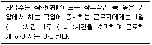
- ㄱ: 4, ㄴ: 30
- ㄱ: 5, ㄴ: 32
- ㄱ: 6, ㄴ: 34
- ㄱ: 7, ㄴ: 36
- ㄱ: 8, ㄴ: 38
(정답률: 알수없음)
20. 산업안전보건법령상 건강진단에 관한 내용으로 ( ) 안에 들어갈 내용을 순서대로 옳게 나열한 것은?
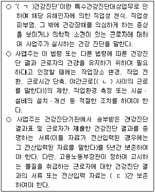
- ㄱ: 특수, ㄴ: 오후 10시부터 오전 6시까지, ㄷ: 10년
- ㄱ: 수시, ㄴ: 오후 10시부터 오전 6시까지, ㄷ: 30년
- ㄱ: 특수, ㄴ: 오후 10시부터 오전 6시까지, ㄷ: 20년
- ㄱ: 수시, ㄴ: 오후 8시부터 오전 4시까지, ㄷ: 30년
- ㄱ: 특별, ㄴ: 오후 8시부터 오전 4시까지, ㄷ: 20년
(정답률: 알수없음)
21. 산업안전보건법령상 사업주는 일정한 질병이 있는 근로자를 고기압 업무에 종사하도록 하여서는 아니 된다. 이 질병에 해당하지 않는 것은?
- 빈혈증
- 메니에르씨병
- 바이러스 감염에 의한 구순포진
- 관절염
- 천식
(정답률: 알수없음)
22. 산업안전보건법령상 작업환경측정에 관한 설명으로 옳은 것을 모두 고른 것은?
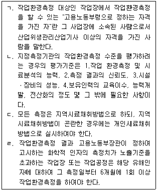
- ㄱ
- ㄱ, ㄴ
- ㄴ, ㄷ
- ㄷ, ㄹ
- ㄱ, ㄴ, ㄷ
(정답률: 알수없음)
23. 산업안전보건법령상 공정안전보고서에 관한 설명으로 옳지 않은 것은?
- 공정안전보고서를 작성하여야 하는 사업장의 사업주는 산업안전보건위원회가 설치 되어 있지 아니한 경우 근로자대표의 의견을 들어 작성하여야 한다.
- 공정안전보고서에는 공정안전자료, 공정위험성 평가서, 안전운전계획, 비상조치계획이 포함되어야 한다.
- 사업주가 공정안전보고서를 제출한 경우에는 해당 유해ㆍ위험설비에 관하여 유해ㆍ 위험방지계획서를 제출한 것으로 본다.
- 「액화석유가스의 안전관리 및 사업법」에 따른 액화석유가스의 충전ㆍ저장시설은 공정안전보고서를 작성하여 제출하여야 하는 대상이 아니다.
- 공정안전보고서 이행 상태의 평가는 공정안전보고서의 확인 후 1년이 경과한 날부터 4년 이내에 하여야 한다.
(정답률: 알수없음)
24. 산업안전보건법령상 산업안전지도사 및 산업보건지도사(이하 '지도사'라 함)의 연수교육 및 보수교육에 관한 설명으로 옳은 것은?
- 산업안전 및 산업보건 분야에서 5년 이상 실무에 종사한 경력이 있는 지도사 자격을 가진 화공안전기술사가 직무를 개시하려면 지도사 등록을 하기 전 2년의 범위에서 고용노동부령으로 정하는 연수교육을 받아야 한다.
- 한국산업안전보건공단이 연수교육을 실시한 때에는 그 결과를 연수교육이 끝난 날부터 30일 이내에 고용노동부장관에게 보고하여야 한다.
- 한국산업안전보건공단이 보수교육을 실시한 때에는 보수교육 이수자 명단, 이수자의 교육 이수를 확인할 수 있는 서류를 5년간 보존하여야 한다.
- 연수교육의 기간은 업무교육 및 실무수습 기간을 합산하여 2개월 이상으로 한다.
- 지도사 등록의 갱신기간 동안 지도실적이 2년 이상인 지도사의 보수교육시간은 5시간 이상으로 한다.
(정답률: 알수없음)
25. 산업안전보건법령상 대통령령으로 정하는 산업재해 예방사업의 보조ㆍ지원에 대한 취소사유와 그에 따른 처분의 내용이 옳지 않은 것은?
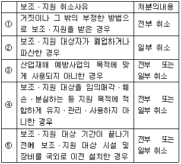
- ①
- ②
- ③
- ④
- ⑤
(정답률: 알수없음)
2과목: 산업보건일반
26. 유기화합물의 신경독성에 관한 설명으로 옳지 않은 것은?
- 대부분의 유기용제는 비특이적인 독성으로 마취작용을 갖고 있다.
- 포화지방족 유기용제(알칸류)는 다른 유기화합물보다 강한 급성 독성을 나타낸다.
- 마취제처럼 뇌와 척추의 활동을 저해한다.
- 작업자를 자극하여 무감각하게 하고, 결국은 무의식 혹은 혼수상태가 된다.
- 이황화탄소(CS2)는 급성 정신병을 동반한 뇌병증을 보인다.
(정답률: 알수없음)
27. 산업안전보건기준에 관한 규칙상 관리대상 유해물질 상태와 관련하여 국소배기 장치 후드의 제어풍속 기준으로 옳은 것은?
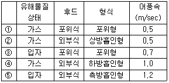
- ①
- ②
- ③
- ④
- ⑤
(정답률: 알수없음)
28. 입자상 물질에 노출되었을 때 발생하는 인체영향에 관한 설명으로 옳지 않은 것은?
- 규폐증은 주로 석공장, 벽돌제조, 도자기제조, 채탄작업 근로자에게 발생한다.
- 석면폐증은 보통 장기간에 걸쳐 진행되며 폐의 탄력성이 감소되어 산소흡수가 저해 되고, 악성중피종은 약 30~40년의 잠복기를 거쳐서 발생되기도 한다.
- 광부에게 발생 가능한 탄광부 진폐증은 교원성(collagenous) 진폐증이다.
- 면폐증은 처음에는 흉부 압박감으로 시작되지만 이어서 지속적인 기침이 동반되고, 천명음도 발생한다.
- 비교원성(non-collagenous) 진폐증은 정상적으로 돌아오지 않는 비가역적인 진폐증 이다.
(정답률: 알수없음)
29. 작업환경에서 발생되는 유해물질별 주요 노출원 및 노출기준으로 옳지 않은 것은?
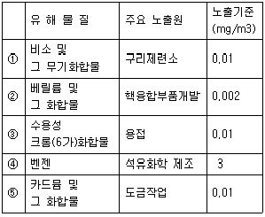
- ①
- ②
- ③
- ④
- ⑤
(정답률: 알수없음)
30. 유기화합물의 직업적 노출로 인한 인체영향의 설명으로 옳은 것은?
- 벤젠 중독 시 초기에는 빈혈, 백혈구 및 혈소판이 감소되어 백혈병이 급성장애로 나타난다.
- 사염화탄소는 주로 신경독성을 유발한다.
- 톨루엔디이소시아네이트(TDI)는 눈과 코에 자극증상이 강하게 나타나지만, 천식성 감작반응은 유발하지 않는다.
- 노말헥산의 대사산물인 2,5-hexanedione은 독성이 강하며, 생물학적 노출지표로도 이용된다.
- 이황화탄소는 우리나라에서 단일 화학물질로는 가장 많은 직업병을 유발한 물질이며, 생물학적 노출지표는 소변 중 phenylglyoxylic acid이다.
(정답률: 알수없음)
31. 사업장에서 사용하는 중금속의 특성에 관한 설명으로 옳은 것은?
- 유기납은 물과 유기용제에 잘 녹는 금속이다.
- 무기수은화합물의 독성은 알킬수은화합물의 독성보다 강하다.
- 6가 크롬은 피부 흡수가 어려우나 3가 크롬은 가능하다.
- 망간에 노출되면 파킨슨씨 증후군과 유사한 뇌병변을 보이며, 무력증과 두통의 증상을 수반한다.
- 5가의 비소화합물은 3가로 산화되면서 독성작용을 일으킨다.
(정답률: 알수없음)
32. 전자제품 제조업 작업장에서 측정한 공기 중 벤젠의 농도가 다음과 같을 때, 기술통계값인 기하평균(GM)과 기하표준편차(GSD)는 약 얼마인가?
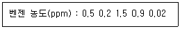
- GM: 0.31 ppm GSD: 5.47
- GM: 0.62 ppm GSD: 0.59
- GM: 0.93 ppm GSD: 5.47
- GM: 0.31 ppm GSD: 0.59
- GM: 0.62 ppm GSD: 3.03
(정답률: 알수없음)
33. 작업환경측정을 위한 예비조사 및 측정계획서 작성에 관한 설명으로 옳지 않은 것은?
- 해당 공정별 작업내용, 측정대상공정, 공정별 화학물질 사용 실태를 파악한다.
- 원재료의 투입과정부터 최종 제품생산까지의 주요 공정을 도식화한다.
- 유해인자별 측정 방법 및 소요기간에 대한 계획을 수립한다.
- 전회 측정을 실시한 사업장은 공정 및 취급인자의 변동이 없는 경우, 서류상의 예비 조사를 생략할 수 있다.
- 측정대상 유해인자 및 유해인자 발생주기를 확인한다.
(정답률: 알수없음)
34. 산소농도가 낮은 작업장에서 발생할 수 있는 질환은?
- Hypoxia
- Caisson disease
- Pneumoconiosis
- Oxygen poison
- Raynaud disease
(정답률: 알수없음)
35. 일반적으로 소음성 난청이 가장 잘 발생될 수 있는 주파수와 음압은?
- 6,000 Hz, 80 dBA
- 4,000 Hz, 100 dBA
- 2,000 Hz, 80 dBA
- 1,000 Hz, 90 dBA
- 500 Hz, 100 dBA
(정답률: 알수없음)
36. 피로의 증상으로 옳지 않은 것은?
- 초기에는 맥박이 느려지고 혈압이 낮아지나 피로가 진행되면서 높아진다.
- 호흡이 얇아지고 호흡곤란이 오기도 한다.
- 근육 내 글리코겐량이 감소한다.
- 혈액의 혈당수치가 낮아지고 젖산과 탄산량이 증가한다.
- 체온이 초기에는 높았다가 피로 정도가 심하면 낮아진다.
(정답률: 알수없음)
37. 화학물질의 분류ㆍ표시 및 물질안전보건자료에 관한 기준상 MSDS의 작성 원칙에 관한 설명으로 옳지 않은 것은?
- 실험실에서 시험·연구목적으로 사용하는 시약은 MSDS가 외국어로 작성된 경우에는 한국어로 번역하지 아니할 수 있다.
- MSDS 작성에 필요한 용어 및 기술지침은 한국산업안전보건공단이 정할 수 있다.
- MSDS의 작성단위는「계량에 관한 법률」이 정하는 바에 의한다.
- MSDS 작성 시 시험결과를 반영하고자 하는 경우에는 해당 국가의 우량실험기준 (GLP)에 따라 수행한 시험결과를 우선적으로 고려하여야 한다.
- MSDS의 어느 항목에 대해 관련 정보를 얻을 수 없거나 적용이 불가능한 경우 “자료 없음”이라고 기재한다.
(정답률: 알수없음)
38. 호흡용 보호구에 관한 설명으로 옳지 않은 것은?
- 공기정화식은 공기가 호흡기로 흡입되기 전에 여과재 또는 정화통에 의해 유해물질을 제거하는 방식이다.
- 공기공급식은 공기 공급관, 공기 호스 또는 자급식 공기원으로 구성된 호흡용 보호구에서 신선한 공기만을 공급하는 방식이다.
- 공기정화식은 가격이 비교적 저렴하고 사용이 간편하여 널리 사용되지만, 산소농도가 18 % 미만인 장소에서는 사용할 수 없다.
- 단시간 노출되었을 시 사망 또는 회복 불가능한 상태를 초래할 수 있는 농도 이상 에서는 공기정화식을 사용할 수 없다.
- 호흡용 보호구 선택 시 고려해야 할 유해비는 노출기준을 공기 중 유해물질 농도로 나눈 값이다.
(정답률: 알수없음)
39. 세척공정에서 작업하는 근로자가 톨루엔 55 ppm의 농도에 노출되고 있다. 해당 작업의 근로자는 공기정화식 반면형 호흡용 보호구를 착용하고 있고 보호구 안의 농도가 0.5 ppm 일 때, 보호계수를 구하고 보호구의 적절성을 평가하면?(순서대로 보호계수, 보호구의 적절성)
- 27.5, 적절
- 27.5,부적절
- 90.9, 적절
- 110, 적절
- 110, 부적절
(정답률: 알수없음)
40. 다음은 A 근로자 우측귀의 주파수별 청력손실치를 나타낸 것이다. 소음성 난청 D1(직업병 유소견자)의 판정기준이 되는 3분법에 의한 평균 청력 손실치(dB)는?
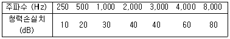
- 20
- 30
- 35
- 43
- 47
(정답률: 알수없음)
41. 산업안전보건법령상 특수건강진단 시 1차 검사항목 중 유해인자별 생물학적 노출 지표에 해당되지 않는 것은?
- 불화수소 - 소변 중 불화물
- 톨루엔 - 소변 중 마뇨산
- 크실렌 - 소변 중 메틸마뇨산
- 디니트로톨루엔 - 혈중 메트헤모글로빈
- p-니트로클로로벤젠 - 혈중 메트헤모글로빈
(정답률: 알수없음)
42. 직무스트레스 관리에 관한 설명으로 옳지 않은 것은?
- 유산소 운동뿐 아니라 역도 등의 근육 운동도 직무스트레스를 관리하는 방법이 될 수 있다.
- 자기의 주장을 표현할 수 있는 훈련도 좋은 관리 방법 중 하나이다.
- 명상을 하는 것도 직무스트레스 관리에 도움이 된다.
- 교대근무 설계 시 야간반 → 저녁반 → 아침반의 순서로 하는 것이 스트레스 관리를 위해서 좋다.
- 야간작업은 연속하여 3일을 넘기지 않도록 설계하는 것이 좋다.
(정답률: 알수없음)
43. 직무스트레스를 호소하고 있는 10명의 근로자가 근무하고 있는 사무실이 아래 와 같은 조건일 때, CO2를 실내환경기준 이하로 관리하기 위한 필요환기량 (m3/hr)은?
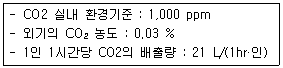
- 100
- 150
- 200
- 250
- 300
(정답률: 알수없음)
44. 흡연, 염화비닐, 아플라톡신으로 인한 암 발생과 가장 밀접한 관련이 있는 인체 장기는?
- 위
- 폐
- 간
- 유방
- 방광
(정답률: 알수없음)
45. 28세 남자 환자가 1주 전부터 발생한 황달 증상으로 내원하였다. 한 달 전부터 에어컨 부품 가공공장에서 유기용제를 이용한 세척작업에 종사하였고, 작업이 끝나면 술에 취한 느낌이 들고 멍한 상태가 되며 가끔 오심을 경험하였으며, 내원 2주 전부터 피부에 발적과 소양감을 동반한 발진이 나타났다. 이러한 질환을 유발할 가능성이 높은 유해물질은?
- 산화에틸렌
- 노말헥산
- 스티렌
- 톨루엔
- 트리클로로에틸렌
(정답률: 알수없음)
46. 야간작업으로 인한 건강영향과 특수건강진단에 관한 설명으로 옳은 것은?
- 교대근무군은 주간근무군과 비교하여 대사증후군 발생률은 비슷하다.
- 위장관계와 내분비계 증상에 대한 1차 검사항목은 문진이다.
- 상시 근로자 50인 이상 100인 미만을 사용하는 사업장은 배치전 건강진단을 실시하지 않아도 된다.
- 배치 후 첫 번째 특수건강진단은 2년 이내에 실시하면 된다.
- 1차 검사항목으로는 총콜레스테롤, 트리글리세라이드, HDL콜레스테롤, 24시간 심전도 검사 등이 있다.
(정답률: 알수없음)
47. 산업재해조사의 목적 및 산업재해 발생보고 방법에 관한 설명으로 옳지 않은 것은?
- 재해조사의 목적은 동종재해를 예방하기 위한 것이다.
- 3일 이상의 휴업이 필요한 부상을 입었거나 질병에 걸린 사람이 발생한 경우에는 산업재해조사표를 제출하여야 한다.
- 휴업일수에 법정휴일은 포함되지 않는다.
- 산업재해조사표에 근로자 대표의 확인을 받아야 하지만 건설업의 경우에는 이를 생략할 수 있다.
- 재해조사를 통하여 근로자 및 사업주의 안전의식을 고취시킬 수 있다.
(정답률: 알수없음)
48. 산업재해 지표에 관한 설명으로 옳은 것만을 모두 고른 것은?
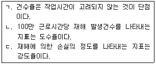
- ㄴ
- ㄱ, ㄴ
- ㄱ, ㄷ
- ㄴ, ㄷ
- ㄱ, ㄴ, ㄷ
(정답률: 알수없음)
49. 다음 산업재해보상보험에 관한 설명으로 옳지 않은 것은?
- 일반보험과는 달리 가입자와 수혜자가 일치하지 않는다.
- 업무상 재해로 인해 보험금을 지급하는 경우, 배우자가 혼인신고를 하지 않은 상태 라면 지급대상에서 배제된다.
- 보상에 있어 해당 근로자의 근무기간은 보상액 산정기간에 고려되지 않는다.
- 사업주는 안전사고 발생에 대한 과실이 전혀 없더라도 업무중 발생한 사고에 대해서는 책임을 져야한다.
- 산업재해보상보험법령상 보상의 주체는 국가이지만, 산업재해보상보험 미가입 대상 사업인 경우 보상의 주체는 사업주이다.
(정답률: 알수없음)
50. 폐암환자 100명과 대조군 100명에 대해 흡연력을 조사한 환자대조군 연구를 수행한 결과는 아래와 같다. 연구 결과를 확인하기 위한 적절한 역학지수와 그 값의 연결이 옳은 것은?
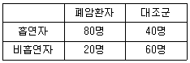
- 교차비 - 2.67
- 상대위험도 - 2.67
- 교차비 - 6
- 상대위험도 - 6
- 기여위험도 - 3.67
(정답률: 알수없음)
3과목: 기업진단 · 지도
51. A기업에서는 평가등급을 5단계로 구분하고 가능한 정규분포를 이루도록 등급별 기준인원을 정하였으나, 평가자에 의하여 다음의 표와 같은 결과가 나타났다. 이와 같은 평가결과의 분포도상의 오류는? (평가등급의 상위순서는 A, B, C, D, E 등급의 순이다.)
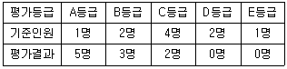
- 논리적오류
- 대비오류
- 관대화경향
- 중심화경향
- 가혹화경향
(정답률: 알수없음)
52. 조직구조에 관한 설명으로 옳지 않은 것은?
- 가상네트워크 조직은 협력업체와 갈등해결 및 관계유지에 상대적으로 적은 시간이 필요하다.
- 기능별 조직은 각 기능부서의 효율성이 중요할 때 적합하다.
- 매트릭스 조직은 이중보고 체계로 인하여 종업원들이 혼란을 느낄 수 있다.
- 사업부제 조직은 2개 이상의 이질적인 제품으로 서로 다른 시장을 공략할 경우에 적합한 조직구조이다.
- 라인스텝 조직은 명령전달과 통제기능을 담당하는 라인과 관리자를 지원하는 스텝으로 구성된다.
(정답률: 알수없음)
53. 인적자원관리에서 이루어지는 기능 또는 활동에 관한 설명으로 옳은 것은?
- 직접보상은 유급휴가, 연금, 보험, 학자금지원 등이 있다.
- 직무평가는 구성원들의 목표치와 실적을 비교하여 기여도를 판단하는 활동이다.
- 현장직무교육은 직무순환제, 도제제도, 멘토링 등이 있다.
- 직무분석은 장래의 인적자원 수요를 파악하여 인력의 확보와 배치, 활용을 위한 계획을 수립하는 것이다.
- 직무기술서의 작성은 직무를 성공적으로 수행하는데 필요한 작업자의 지식과 특성, 능력 등을 문서로 만드는 것이다.
(정답률: 알수없음)
54. 조직문화에 관한 설명으로 옳은 것을 모두 고른 것은?
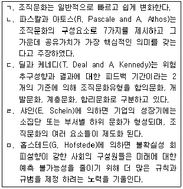
- ㄱ, ㄴ, ㄹ
- ㄴ, ㄷ, ㄹ
- ㄴ, ㄷ, ㅁ
- ㄴ, ㄹ, ㅁ
- ㄷ, ㄹ, ㅁ
(정답률: 알수없음)
55. 생산시스템에 관한 설명으로 옳지 않은 것은?
- VMI는 공급자주도형 재고관리를 뜻한다.
- MRP는 자재소요량계획으로 제품생산에 필요한 부품의 투입시점과 투입량을 관리하는 시스템이다.
- ERP는 조직의 자금, 회계, 구매, 생산, 판매 등의 업무흐름을 통합관리하는 정보 시스템이다.
- SCM은 부품 공급업체와 생산업체 그리고 고객에 이르는 제반 거래 참여자들이 정보를 공유함으로써 고객의 요구에 민첩하게 대응하도록 지원하는 것이다.
- BPR은 낭비나 비능률을 점진적이고 지속적으로 개선하는 기능중심의 경영관리기법 이다.
(정답률: 알수없음)
56. 인형을 판매하는 A사는 경제적주문량(EOQ) 모형을 이용하여 재고정책을 수립 하려고 한다. 다음과 같은 조건일 때 1회의 경제적주문량은?
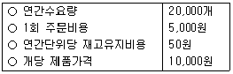
- 1,000개
- 2,000개
- 3,000개
- 3,500개
- 4,000개
(정답률: 알수없음)
57. 동기부여이론에 관한 설명으로 옳지 않은 것은?
- 데시(E. Deci)의 인지평가이론에 의하면 외재적 보상이 주어지면 내재적 동기가 증가 된다.
- 로크(E. Locke)의 목표설정이론에 의하면 목표가 종업원들의 동기유발에 영향을 미치며, 피드백이 주어지지 않을 때 보다는 피드백이 주어질 때 성과가 높다.
- 엘더퍼(C. Alderfer)의 ERG이론은 매슬로우(A. Maslow)의 욕구단계이론과 달리 좌절-퇴행 개념을 도입하였다.
- 브룸(V. Vroom)의 기대이론에 의하면 종업원의 직무수행 성과를 정확하고 공정하게 측정하는 것은 수단성을 높이는 방법이다.
- 아담스(J. Adams)의 공정성이론에 의하면 종업원은 자신과 준거집단이나 준거인물의 투입과 산출 비율을 비교하여 불공정하다고 지각하게 될 때 공정성을 이루는 방향 으로 동기유발 된다.
(정답률: 알수없음)
58. 단체교섭의 방식에 관한 설명으로 옳지 않은 것은?
- 기업별 교섭은 특정기업 또는 사업장 단위로 조직된 노동조합이 단체교섭의 당사자가 되어 기업주 또는 사용자와 교섭하는 방식이다.
- 공동교섭은 상부단체인 산업별, 직업별 노동조합이 하부단체인 기업별 노조나 기업 단위의 노조지부와 공동으로 지역적 사용자와 교섭하는 방식이다.
- 대각선 교섭은 전국적 또는 지역적인 산업별 노동조합이 각각의 개별 기업과 교섭 하는 방식이다.
- 통일교섭은 전국적 또는 지역적인 산업별 또는 직업별 노동조합과 이에 대응하는 전국적 또는 지역적인 사용자와 교섭하는 방식이다.
- 집단교섭은 여러 개의 노동조합 지부가 공동으로 이에 대응하는 여러 개의 기업들과 집단적으로 교섭하는 방식이다.
(정답률: 알수없음)
59. 제품생애주기(Product Life Cycle)에 관한 설명으로 옳지 않은 것은?
- 도입기는 고객의 요구에 따라 잦은 설계변경이 있을 수 있으므로 공정의 유연성이 필요하다.
- 쇠퇴기는 제품이 진부화되어 매출이 줄어든다.
- 성장기는 수요가 증가하므로 공정중심의 생산시스템에서 제품중심으로 변경하여 생산능력을 크게 확장시켜야 한다.
- 성숙기는 성장기에 비하여 이익 수준이 낮다.
- 성장기는 도입기에 비하여 마케팅 역할이 크게 요구되는 시기이다.
(정답률: 알수없음)
60. 작업장에서 사고와 질병을 유발하는 위해요인에 관한 설명으로 옳은 것은?
- 5요인 성격 특질과 사고의 관계를 보면, 성실성이 낮은 사람이 높은 사람보다 사고를 일으킬 가능성이 더 낮다.
- 소리의 수준이 10 dB까지 증가하면 소리의 크기는 10배 증가하며, 20 dB까지 증가하면 20배 증가한다.
- 컴퓨터 자판 작업이나 타이핑 작업을 많이 하는 사람들은 수근관 증후군(carpal tunnel syndrome)의 위험성이 높다.
- 직장에서 소음에 대한 노출은 청각 손상에 영향을 주지만 심장혈관계 질병과는 관련이 없다.
- 사회복지기관과 병원은 직장 폭력이 발생할 위험성이 가장 적은 장소이다.
(정답률: 알수없음)
61. 심리검사에 관한 설명으로 옳은 것을 모두 고른 것은?
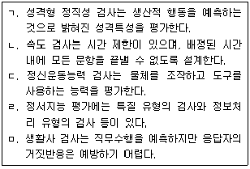
- ㄱ, ㄴ, ㄹ
- ㄱ, ㄷ, ㄹ
- ㄱ, ㄹ, ㅁ
- ㄴ, ㄷ, ㄹ
- ㄴ, ㄷ, ㅁ
(정답률: 알수없음)
62. 직무스트레스 요인에 관한 설명으로 옳지 않은 것은?
- 역할 내 갈등은 직무상 요구가 여럿일 때 발생한다.
- 역할 모호성은 상사가 명확한 지침과 방향성을 제시하지 못하는 경우에 유발된다.
- 작업부하는 업무 요구량에 관한 것으로 직접 유형과 간접 유형이 있다.
- 요구-통제 모형에 의하면 통제력은 요구의 부정적 효과를 줄이거나 완충해 주는 역할을 한다.
- 대인관계 갈등과 타인과의 소원한 관계는 다양한 스트레스 반응을 유발할 수 있다.
(정답률: 알수없음)
63. 인사선발에 관한 설명으로 옳은 것은?
- 선발검사의 효용성을 증가시키는 가장 중요한 요소는 검사 신뢰도이다.
- 인사선발에서 기초율이란 지원자들 중에서 우수한 지원자의 비율을 말한다.
- 잘못된 불합격자(false negative)란 검사에서 불합격점을 받아서 떨어뜨렸고, 채용 하였더라도 불만족스러운 직무수행을 나타냈을 사람이다.
- 인사선발에서 예측변인의 합격점이란 선발된 사람들 중에서 우수와 비우수 수행자를 구분하는 기준이다.
- 선발률과 예측변인의 가치 간의 관계는 선발률이 낮을수록 예측변인의 가치가 더 커진다.
(정답률: 알수없음)
64. 인간의 정보처리 능력에 관한 설명으로 옳지 않은 것은?
- 경로용량은 절대식별에 근거하여 정보를 신뢰성 있게 전달할 수 있는 최대용량이다.
- 단일 자극이 아니라 여러 차원을 조합하여 사용하는 경우에는 정보전달의 신뢰성이 감소한다.
- 절대식별이란 특정 부류에 속하는 신호가 단독으로 제시되었을 때 이를 식별할 수 있는 능력이다.
- 인간의 정보처리 능력은 단기기억에 대한 처리 능력을 의미하며, 절대식별 능력으로 조사한다.
- 밀러(Miller)에 의하면 인간의 절대적 판단에 의한 단일 자극의 판별범위는 보통 5~9가지이다.
(정답률: 알수없음)
65. 소음의 영향에 관한 설명으로 옳지 않은 것은?
- 의미있는 소음이 의미없는 소음보다 작업능률 저해 효과가 더 크게 나타난다.
- 강력한 소음에 노출된 직후에 일시적으로 청력이 저하되는 것을 일시성 청력손실이라 하며, 휴식하면 회복된다.
- 초기 소음성 청력손실은 대화 범주 이상의 주파수에서 생겨 대화에 장애를 느끼지 못하다가 이후에 다른 주파수까지 진행된다.
- 소음 작업장에서 전화벨 소리가 잘 안 들리고, 작업지시 내용 등을 알아듣기 어려운 현상을 은폐효과(masking effect)라고 한다.
- 일시적 청력 손실은 300 Hz~3,000 Hz 사이에서 가장 많이 발생하며, 3,000 Hz 부근의 음에 대한 청력저하가 가장 심하다.
(정답률: 알수없음)
66. 집단 의사결정에 관한 설명으로 옳지 않은 것은?
- 팀의 혁신을 촉진할 수 있는 최적의 상황은 과업에 대한 구성원 간의 갈등이 중간 정도일 때다.
- 집단극화는 집단 구성원의 소수가 모험적인 선택을 할 때 이를 따르는 상황에서 발생한다.
- 집단사고는 개별 구성원의 생각으로는 좋지 않다고 생각하는 결정을 집단이 선택할 때 나타나는 현상이다.
- 집단사고는 집단 응집성, 강력한 리더, 집단의 고립, 순응에 대한 압력 때문에 나타 난다.
- 집단사고를 예방하기 위해서 다양한 사회적 배경을 가진 집단 구성원이 있는 것이 좋다.
(정답률: 알수없음)
67. 행위적 관점에서 분류한 휴먼에러의 유형에 해당하는 것은?
- 순서 오류(sequence error)
- 피드백 오류(feedback error)
- 입력 오류(input error)
- 의사결정 오류(decision making error)
- 출력 오류(output error)
(정답률: 알수없음)
68. 직무분석을 위한 정보를 수집하는 방법의 장점과 한계에 관한 설명으로 옳은 것을 모두 고른 것은?
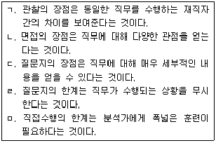
- ㄱ, ㄷ, ㄹ
- ㄴ, ㄷ, ㄹ
- ㄴ, ㄷ, ㅁ
- ㄴ, ㄹ, ㅁ
- ㄷ, ㄹ, ㅁ
(정답률: 알수없음)
69. 전격현상의 위험을 결정하는 직접적인 원인을 모두 고른 것은?
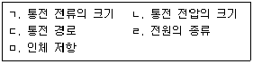
- ㄱ, ㄴ
- ㄱ, ㅁ
- ㄱ, ㄴ, ㄷ
- ㄱ, ㄷ, ㄹ
- ㄱ, ㄷ, ㄹ, ㅁ
(정답률: 알수없음)
70. 사업주가 실시하는 단계별 위험성평가 추진절차와 그 내용이 잘못 연결된 것은?
- 1단계 사전준비?평가시기 및 절차
- 2단계 유해ㆍ위험요인 파악?청취에 의한 방법
- 3단계 위험성 추정?가능성 및 중대성의 크기 추정
- 4단계 위험성 결정?위험성 크기의 허용 가능여부 판단
- 5단계 위험성 감소대책 수립 및 실행?사업장 순회점검에 의한 방법
(정답률: 알수없음)
71. KOSHA 18001에 따라 일반 사업장의 안전보건경영체제를 구축하고자 할 때 안전보건 교육 및 훈련 계획 수립에 포함되어야 할 사항이 아닌 것은?
- 근로자의 업무 또는 작업이 안전보건에 미치는 영향과 결과
- 위험성평가 관리(방법, 절차 등)와 현장위험요인 관리 및 현장분야 운영 관련
- 비상시 대응절차 및 규정된 대응절차로부터 벗어날 때 발생 할 수 있는 이차적 피해
- 위험성평가 결과, 개선내용 및 잔여 위험요인과 그 대책
- 안전보건 방침, 안전보건경영체제상 수행하여야 할 안전보건활동과 담당자의 역할 및 책임
(정답률: 알수없음)
72. 방독마스크의 등급에 따른 사용장소에 관한 설명으로 옳지 않은 것은?
- 저농도 방독마스크는 가스 또는 증기의 농도가 100분의 0.5 이하의 대기 중에서 사용 하는 것으로서 긴급용이 아닌 것이다.
- 중농도 방독마스크는 가스 또는 증기의 농도가 100분의 1 이하의 대기 중에서 사용 하는 것이다.
- 고농도 방독마스크는 가스 또는 증기의 농도가 100분의 2 이하의 대기 중에서 사용 하는 것이다.
- 고농도와 중농도에서 사용하는 방독마스크는 전면형을 사용해야 한다.
- 방독마스크는 산소농도가 18% 이상인 장소에서 사용하여야 한다.
(정답률: 알수없음)
73. A 사업장에서 당해 연도 사고건수는 총 990건으로 확인되었다. 하인리히 (Heinrich)의 재해구성 비율에 의해 추정되는 인적재해(사망, 중상, 경상) 건수는?
- 3
- 33
- 87
- 90
- 900
(정답률: 알수없음)
74. 개인보호구 사용 및 관리에 관한 권장사항의 내용으로 옳은 것은?
- 보호구의 지급주기는 작업 특성과 실태, 작업 환경의 정도, 보호구별 특성에 따라 사업장 실정에 적합하게 정한다.
- AB형 안전모는 감전에 의한 위험을 방지 또는 경감시키기 위한 것이다.
- 비계의 조립ㆍ해체 작업을 할 때는 추락방지를 위한 목적으로 벨트식 안전대의 착용이 권장된다.
- 안전대 사용 시 “안전거리 = 죔줄 길이 - 걸이설비 높이 + 감속거리”로 산출한다.
- 방음보호구 선택 시 활동이 많은 작업은 귀덮개, 활동이 적은 작업은 귀마개 착용을 권장된다.
(정답률: 알수없음)
75. 다음 중 사용자가 잘못 조작하더라도 사고나 재해가 발생하지 않도록 하는 기계ㆍ 기구의 안전장치가 아닌 것은?
- 회전부 덮개가 완전히 닫히면 정상 작동하고, 덮개가 열리면 작동이 멈추는 장치
- 양손으로 동시에 조작해야 정상 작동하는 프레스 기계
- 양쪽의 비행기 엔진중 하나가 고장 나더라도 정상적으로 비행할 수 있는 병렬시스템
- 작동이 중지되어도 일정 시간 동안 고열부 차단 덮개가 열리지 않는 기계
- 일반 제품과 다른 고전압용 기계 설비의 플러그 모양
(정답률: 알수없음)
이유: 산업안전보건법령상 안전보건관리규정은 사업주가 작성하여야 하는데, 이 규정에는 작업장 안전관리에 관한 사항, 안전ㆍ보건교육에 관한 사항 등이 포함되어야 합니다. 안전보건관리규정을 작성하여야 할 사유가 발생한 경우에는 그 사유를 안 날부터 30일 이내에 작성하여야 하며, 변경할 사유가 발생한 경우에는 그 사유를 안 날부터 15일 이내에 작성하여야 합니다. 또한, 다른 법령에서 정하는 안전관리에 관한 규정과 통합하여 작성할 수 있으며, 해당 사업장에 적용되는 단체협약 및 취업규칙에 반하는 경우에는 그 단체협약 또는 취업규칙으로 정한 기준에 따릅니다.